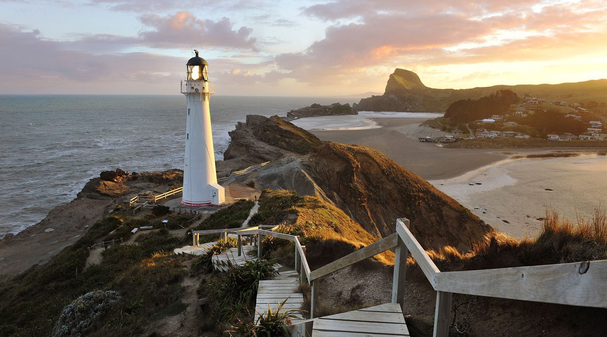
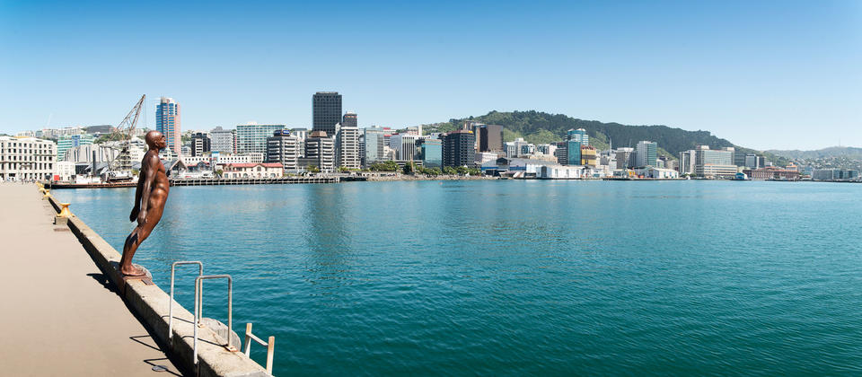
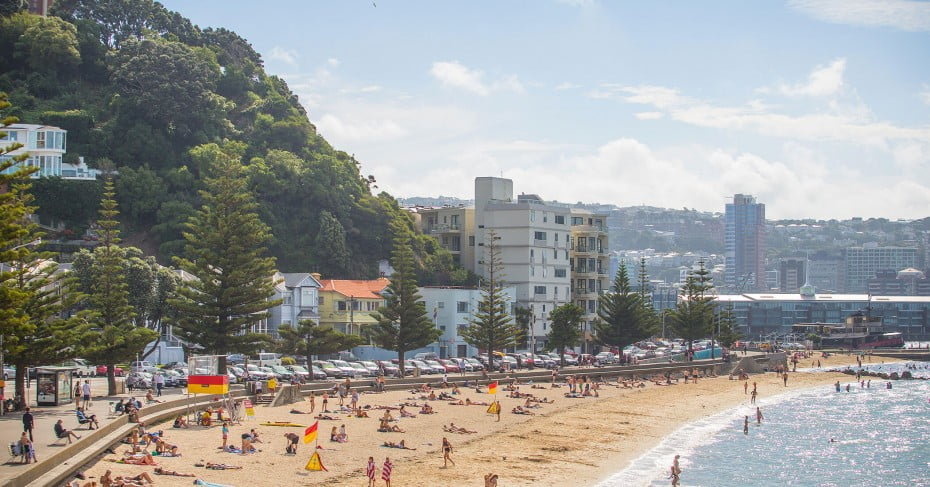
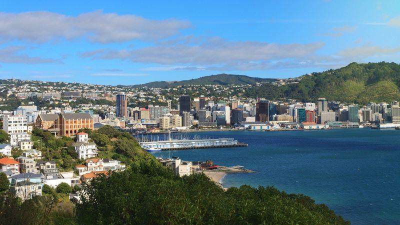

What to do in Wellington?
There are plenty of things to do while in Wellington. You can visit the Wellington Zoo, the Cape Palliser Lighthouse, the Museum of New Zealand Te Papa Tongarewa, and/or sight see on the Wellington Cable Car. If you would like to discover more to do while visiting Wellington, click the image to the left.
Where is Wellington?
Wellington is a small coastal city in New Zealand located on the North Island's southern tip. Wellington is also the capital of New Zealand. If you would like to see a more detailed map of Wellington, click the image to the right.
How to get to Wellington?
The easiest way to travel to Wellington is via direct flight to Wellington International Airport. You could also drive or take the train from various parts of New Zealand to get to Wellington. If you want to learn more about your options of travel to Wellington, click the image to the left.





Want to see more images of Wellington? Click the image to the right!